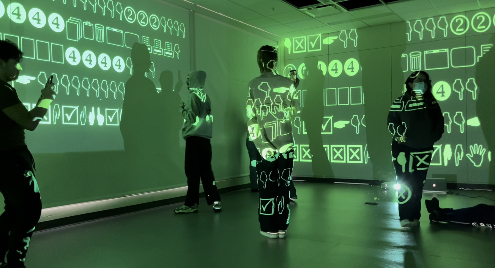

Landscape of Time

Landscape of Time is an immersive projection installation that plays with concepts of time, transportation, and postmodern imagery. Abbass & Rahme piece Contingency inspired me through the use of sound as a spatial practice, distortion, and use of lighting. Another inspiration for this piece is Barbara Kruger's use of typography. Covid-19 has changed my perception of time as this piece drives that idea of time as a landscape rather than an arrow.